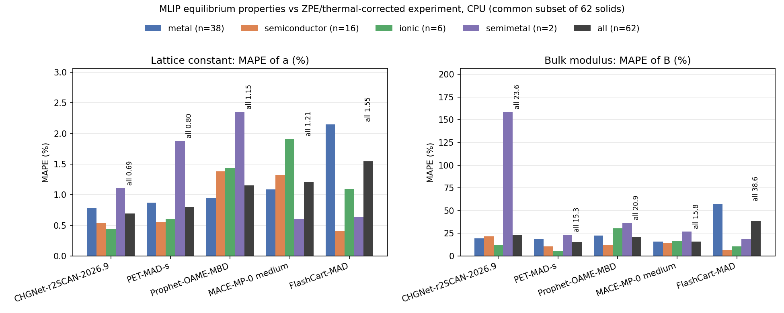
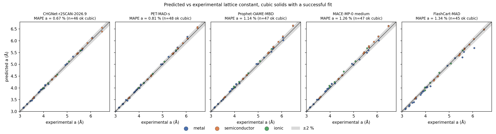
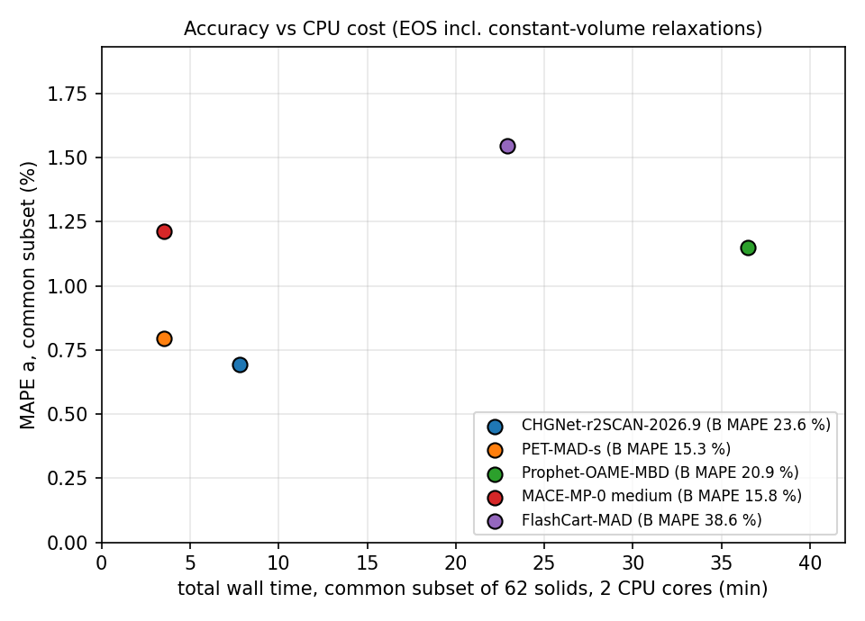

Five machine-learned interatomic potentials on CPU: lattice constants and bulk moduli vs experiment
Universal machine-learned interatomic potentials (MLIPs) are now the first thing many people reach for before DFT. Most published comparisons score them against DFT labels. DFT-reference tests measure agreement with a chosen functional. Here we compare with experimental estimates corrected to the static-lattice limit.
The test is small: equation-of-state fits on 70 solids near their experimental structures, compared with experimental lattice constants and bulk moduli, on 2 CPU cores. Code, per-solid results and charts are in github.com/ByungwoongYoo/mlip-cpu-bench-2026.
Reference data
Raw room-temperature lattice constants are not the right target. Thermal expansion and zero-point motion both shift them, so a perfect static-lattice model would still look wrong. We used two sources that correct for both:
- TSB16 (Tran, Stelzl and Blaha, J. Chem. Phys. 144, 204120, 2016): 44 cubic solids, metals, semiconductors and ionic crystals.
- LEJ14 (Lejaeghere et al., Crit. Rev. Solid State Mater. Sci. 39, 1, 2014): 26 more elements, with corrected volumes, bulk moduli and the paper's crystal structures.
These two are not independent: TSB16 reuses LEJ14's corrections for elements. The zero-point corrections are model-based, and experimental bulk moduli carry several per cent of uncertainty on their own.
The protocol
For each solid and model we computed energies at 11 volumes over ±6 % around the reference volume. Cells with free shape or internal coordinates (23 of the 70) got a constant-volume, symmetry-preserving relaxation at each volume: ASE's BFGS optimiser with a symmetry constraint, a force/stress threshold of 0.005 eV/Å and at most 300 steps. We then fitted a third-order Birch–Murnaghan equation of state. If the fitted minimum was more than 3 % from the centre, the grid was recentred and refitted, at most three times.
A fit counts as failed if the minimum lies outside the sampled range, the bulk modulus comes out non-positive, an energy is not finite, or the model raises an error. We report completion counts over all 70 solids. Accuracy averages use only the 62 solids completed by every model; failures receive no numerical penalty in those averages. Every failure is listed below.
A relaxation that hits 300 steps stays in the fit with a warning in the result file. We do not count it as a failure. In the final runs this happened only with CHGNet-r2SCAN: 10 volume points spread over Hf, Lu, Tc, Y and Zr, whose fits we kept, and 6 on boron, which failed anyway. The other four models converged at every relaxed point.
Everything ran one model at a time on 2 pinned cores with 2 threads and float64 where the model supports it. We did not specify or optimise magnetic order, so this benchmark does not test recovery of the correct magnetic states of Fe, Co, Ni or Cr.
The equation of state gives only a volume. It does not give the full set of cell parameters. So "a" in the tables is the volume-equivalent lattice constant: its error is 100 × [(V/V_ref)^(1/3) − 1] with volumes per atom. For the non-cubic solids this can hide errors in axis ratios and angles, which we did not score. The parity plot below uses the conventional lattice constant of the cubic solids only.
Results
To compare the models on the same solids, the headline uses the 62 solids that all five fitted successfully.
| Model | ok / 70 | MAPE a (%) | MAPE B (%) | ME a (%) | ME B (%) | wall, 62 solids (s) |
|---|---|---|---|---|---|---|
| CHGNet-r2SCAN-2026.9 | 66 | 0.69 | 23.6 | +0.24 | +11.7 | 469 |
| PET-MAD-s | 68 | 0.80 | 15.3 | +0.49 | −12.3 | 211 |
| Prophet-OAME-MBD | 69 | 1.15 | 20.9 | +1.05 | −10.2 | 2189 |
| MACE-MP-0 medium | 69 | 1.21 | 15.8 | +1.04 | −6.6 | 211 |
| FlashCart-MAD | 67 | 1.55 | 38.6 | −1.33 | +32.1 | 1375 |
MAPE is the mean absolute percentage error, and ME is the mean signed error (positive means the model overestimates). All columns use the 62 common solids. The wall times are observed workflow runtimes (see the CPU cost section).

A few things stand out.
On the 62 common successful cases, the reported MAPE ranges from 0.69% to 1.55%. CHGNet-r2SCAN has the lowest observed value at 0.69 %, with PET-MAD-s at 0.80 %. MACE-MP-0 and Prophet overestimate the volume-equivalent lattice constant by about 1 % on average (+1.04 % and +1.05 %). FlashCart goes the other way, at −1.33 %. We did not test why.
Bulk moduli have larger errors. The lowest observed MAPE is 15.3 % (PET-MAD-s), with MACE-MP-0 at 15.8 %. A 0.5-point gap on 62 solids is not enough to call a stable winner. Percentage errors on B are inflated by the soft alkali and alkaline-earth metals: K, Rb, Cs and Ba have reference bulk moduli between 2.3 and 10.6 GPa, so a small absolute miss becomes a huge percentage. FlashCart's 38.6 % is pulled up by K (+499 %) and Rb (+489 %).
Class averages can hide single solids. CHGNet-r2SCAN has a semimetal B error of about 159 %, but that class has only two solids in the common set, Bi and Sb, and Sb alone is off by +201 %. MgO is the only oxide in the set, so there is no oxide average at all.

Failures
Every model failed somewhere:
- CHGNet-r2SCAN: B, Cs, Ga, Po
- PET-MAD-s: As, Zn
- Prophet: Po
- MACE-MP-0: Po
- FlashCart: Ba, Cs, Fe
The Po failures of CHGNet-r2SCAN, Prophet and MACE are not fit failures: each model raised an element lookup error on polonium (atomic number 84) before any energy was computed. Two more are runtime errors: CHGNet-r2SCAN on Ga stopped with "SVD did not converge", and FlashCart on Cs raised a PyTorch RuntimeError on an empty tensor. The rest failed the fit checks: the energy minimum fell outside the sampled range (CHGNet on Cs, PET-MAD-s on As, FlashCart on Ba), the bulk modulus came out non-positive (PET-MAD-s on Zn), or both (CHGNet on B, FlashCart on Fe). If your chemistry includes a specific element, check that the model covers it before you trust a batch run.
Successful fits also differ in quality. The median RMS residual of the Birch–Murnaghan fit on the common set is below 0.15 meV/atom for every model. Prophet has one large outlier, Co at 19.75 meV/atom, so its Co result is less reliable than the rest. Per-solid residuals, recentring passes and convergence flags are in the result JSON files.
CPU cost

PET-MAD-s and MACE-MP-0 each finished the 62 common solids in 211 s on 2 cores. CHGNet-r2SCAN took 469 s, FlashCart 1,375 s and Prophet 2,189 s. These totals include the constant-volume relaxations of non-cubic cells, so they also depend on how many relaxation steps each model needs.
Prophet did not finish as one job. Its sequential run was killed by the 3,000 MB memory watchdog on boron, so the remaining solids ran one per process. The boron retry used a 3,500 MB limit and peaked at 3,381 MB.
These are observed workflow runtimes; shared-host contention and different model-loading policies prevent a controlled speed comparison. For example, Prophet's per-solid jobs each loaded the model again.
Limitations
- This is a local check of the equation of state around the experimental structure and reference volume. It does not show how the models do on new structures, other chemistries or large screening runs.
- Magnetic order was not set or optimised (see above).
- The common set is mostly cubic and mostly metals (38 metals, 16 semiconductors, 6 ionic solids, 2 semimetals).
- Static lattice only, so no phonons and no finite temperature.
- One checkpoint per model, selected explicitly: CHGNet-PES-MatPES-r2SCAN-1M-2026.9 (matgl 4.1.3), PET-MAD-s v1.6.0, MACE-MP-0 medium (2023-12-03; the
mace_mpdefault in mace-torch 0.3.17 is a different model), Prophet-OAME-MBD and the FlashCart MAD seed-0 checkpoint. The README lists revisions and file hashes. We did not check whether fixes listed in the matgl changelog change the CHGNet-r2SCAN results.
Takeaway
In this local test, CHGNet-r2SCAN had the lowest observed error on the volume-equivalent a and PET-MAD-s the lowest on B, with MACE-MP-0 close behind on B. PET-MAD-s was second on a. These gaps come from one small, mostly cubic set, so use them to decide which models to test on your own systems. They do not make a ranking. Before using model weights or model-generated outputs commercially, check the checkpoint-specific licences in the repo. The licence of the CHGNet-r2SCAN-2026.9 weights is unknown: its model card states none.
Reproduce it
The repo has the protocol script, the job wrapper with the memory watchdog, a script that downloads the reference data and checks its checksums, all per-solid results and the aggregation code. Rebuilding the tables and charts from the shipped results takes one command, and the README lists the package versions used for each model.
Related notes
- A flash point prediction dataset you can actually train on
- Henry's law constant dataset for machine learning: cleaning Sander's compilation
- Where to download a logP dataset with SMILES (and what to check before you train on it)
- A melting point dataset for machine learning: what's in the Bradley set and how to clean it
- Scaffold split vs random split in chemistry ML: the same model on 13 datasets
- Solubility in organic solvents: an ML dataset and the limits of random splits
- Tabular foundation models vs XGBoost on small data: a CPU learning-curve test